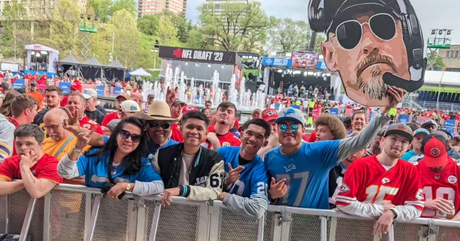

Hello there! I'm Troy Galicia. I majored in Bachelor of Science, Computer Science from the University of Nevada, Las Vegas in December 2023. My goal is to find entry level software engineering positions. My favorite projects I made during UNLV was making a rhythm game similar to "Crypt of the Necrodancer" and automating away boring tasks with Selenium.
Outside of academics, I enjoy playing ragtime and classical piano music. I recently learned "Maple Leaf Rag" by Scott Joplin and am currently learning Chopin's "Nocturne Op.9 No.2" from YouTube videos. I also enjoy spending time walking to the library, enjoying a good book and running around the park if it's not 110 degrees outside.
I'm also an avid fan of the Detroit Lions! My family is originally from Michigan and I've stuck with this team since the 0-16 days. We've attended the NFL Draft ever since they started hosting it outside of NYC.
So, that's a small picture about me – an upcoming CS graduate hoping to be a software engineer with passions for piano, reading and exercising. I'm excited for new connections and experiences!
Feel free to reach out to me: